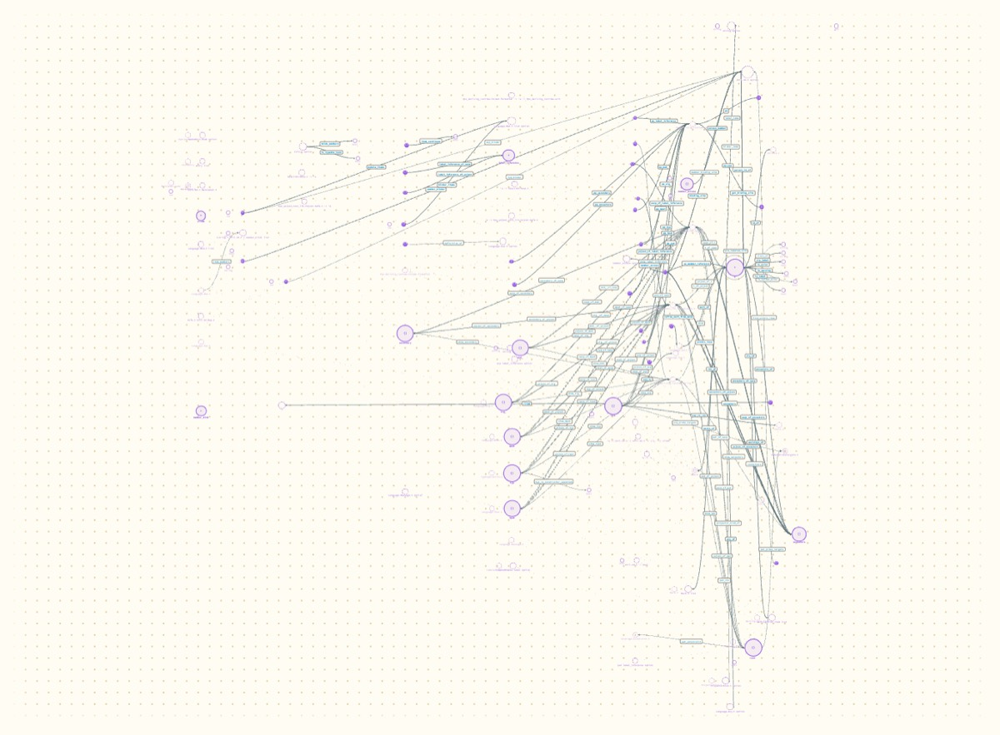

What happens with Hazel?
Extraction is fine: 8 seconds for 15,796 functions. Reading is not: 853 modules in a menu, and a module of 129 definitions draws as a tangle.
- Why
Hazel is the third target after new projects and small real ones, and the largest OCaml code base to hand. Trying it early says which problems are about size.
- What I did
-
Ran the extractor alone on a copy of Hazel that was already built (the agent-canvas branch, 897 compiled files), then loaded the graph into the page as a recording with one event.
This is the cheapest version of the experiment. Nothing was built or watched, there was no agent, and the code panel had no source to show.
What happened
| Measure | Result |
|---|---|
| Extraction | 8.1 seconds |
| Graph | 12 MB of JSON: 15,796 functions, 9,621 type nodes, 3,584 values |
| Tests | 554 found and attached to the functions they mention |
| Modules | 1,102 counting nested ones; 853 in the page's menu, in 71 folders |
| Page load | Drawn within the 12 seconds I allowed; not timed more closely |
Switching to Info (129 definitions) | 1.1 seconds, then the picture below |
Switching to Mark (257 definitions) | The page stopped responding for 12.4 seconds |

Info module with today's layout. The records on the left of the tangle are the four kinds of info; almost every function runs between them and one node on the right.- What it means
-
Reading the compiler's output scales. The limits are all on the page.
A menu of 853 names is not a way to find anything. Something above the one-module view is needed: a map of modules, a search, or both.
One module at a time is not small enough. Past a hundred definitions the layout gives a tangle, and it takes long enough to block the page.
- Not tried
Watching Hazel live. That needs a second full build of Hazel in Portolan's own build folder, which takes several minutes and a few gigabytes. It is worth doing once the page can show the result.
- Next
Entry 3 (layouts and their cost) and entry 7 (a map of modules) come straight out of this.